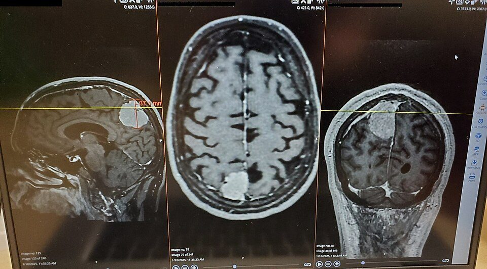

General information only. It does not replace advice from your care team and should not be used to choose a treatment.


At a glance
| How common | 320,000 malignant nervous system tumours a year worldwide; about 12,000 brain tumours a year in the UK |
| Who | Any age; the most common solid tumours in children |
| Types | Gliomas (glioblastoma, astrocytoma, oligodendroglioma), meningiomas, metastases, lymphomas, pituitary tumours, medulloblastoma |
| Symptoms | New, progressive headache, seizures, neurological deficit, behaviour changes |
| Treatment | Surgery (often awake), radiotherapy, chemotherapy (temozolomide), vorasidenib |
What it includes
Primary tumours arise in the nervous system itself. Brain metastases from other cancers (lung, breast, melanoma) are much more common.
| Tumour | Behaviour | Sheet |
|---|---|---|
| Glioblastoma | The most common and aggressive malignant glioma | Glioblastoma |
| IDH-mutant astrocytoma and oligodendroglioma | Slower growing, young adults | Low-grade gliomas |
| Meningioma | The most common primary brain tumour; almost always benign | Meningioma |
| Brain metastases | The most common overall | Brain metastases |
| Primary CNS lymphoma | Responds to chemotherapy | Primary CNS lymphoma |
| Pituitary tumours | Almost always benign, upset hormones | Pituitary tumours |
| Medulloblastoma | The most common malignant brain tumour in children | Medulloblastoma |
| Ependymoma | Children and adults; brain or spinal cord | Ependymoma |
| Vestibular schwannoma (acoustic neuroma) | Benign; one-sided hearing loss | — |
The WHO 2021 classification
The 5th edition of the WHO classification integrates histology and molecular biology. The key alterations are:
- IDH1/IDH2: their presence defines astrocytomas and oligodendrogliomas (better outlook); their absence in an adult diffuse glioma with certain features defines glioblastoma.
- 1p/19q codeletion: defines oligodendroglioma.
- MGMT promoter methylation: predicts response to temozolomide.
- H3 K27M, BRAF, DNA methylation profiling, among others.
Grades range from 1 to 4 within each type.
Risk factors
Causes are unknown in most cases. Known factors: ionising radiation to the head (especially in childhood) and inherited syndromes (neurofibromatosis types 1 and 2, Li-Fraumeni, tuberous sclerosis, von Hippel-Lindau, Lynch syndrome, Gorlin). Studies have not shown that mobile phones cause brain tumours; IARC classified them in 2011 as "possibly carcinogenic" (group 2B) as a precaution, and later reviews, including a WHO-commissioned one in 2024, found no association.
Symptoms
- A new, progressive headache, worse in the morning or on coughing, with vomiting.
- Seizures in an adult with no history.
- Focal deficits: one-sided weakness, problems with speech, vision or balance.
- Changes in personality, memory or behaviour.
- Hormonal disturbances (pituitary).
Diagnosis
- Contrast MRI; advanced techniques (perfusion, spectroscopy, tractography).
- Biopsy or removal for histological and molecular diagnosis.
- For some tumours, cerebrospinal fluid testing and spinal MRI.
Treatment
- Surgery: removing as much tumour as possible without harming function, with neuronavigation, intraoperative MRI, 5-ALA fluorescence and awake surgery for tumours near speech or movement areas.
- Fractionated radiotherapy, radiosurgery (Gamma Knife, linear accelerators) and proton therapy for children.
- Chemotherapy: temozolomide, PCV (procarbazine, lomustine and vincristine).
- Targeted therapy: vorasidenib for low-grade IDH-mutant gliomas (INDIGO trial, 2023), BRAF/MEK inhibitors for BRAF tumours.
- Supportive treatment: steroids (dexamethasone) for swelling, anti-seizure drugs, rehabilitation.
Living with a brain tumour
It can affect memory, concentration, personality and the ability to drive (there are specific rules after a seizure; in the UK the DVLA must be informed). Neurorehabilitation, occupational therapy, speech therapy, psychological support and palliative care are very helpful.
Questions for your team
- What type of tumour is it and what is its molecular profile (IDH, MGMT)?
- How much tumour can be safely removed?
- How will it affect my abilities? Can I drive?
- Are there clinical trials for my tumour?
See also: Glioblastoma, Meningioma, Brain metastases, Childhood cancer.
History · Medicapedia
Brain tumours in the history of medicine
How it was discovered, who studied it and how its treatment changed over the centuries, told on Medicapedia, our sister site on the history of medicine.
Read the history on Medicapedia ↗Sources
- Louis DN, et al. The 2021 WHO Classification of Tumors of the Central Nervous System: a summary. Neuro Oncol. 2021;23:1231-1251. doi:10.1093/neuonc/noab106
- Weller M, et al. EANO guidelines on the diagnosis and treatment of diffuse gliomas of adulthood. Nat Rev Clin Oncol. 2021;18:170-186. doi:10.1038/s41571-020-00447-z
- Mellinghoff IK, et al. Vorasidenib in IDH1- or IDH2-mutant low-grade glioma (INDIGO). N Engl J Med. 2023;389:589-601. doi:10.1056/NEJMoa2304194
- Karipidis K, et al. The effect of exposure to radiofrequency fields on cancer risk in the general and working population: a systematic review. Environ Int. 2024;191:108983.
- The Brain Tumour Charity. thebraintumourcharity.org
Recent guidelines and documents (2024-2026)
- SEOM and REDECAN. Las cifras del cáncer en España 2026 (Cancer figures in Spain 2026). Madrid: SEOM; 2026. seom.org
- EANO guideline on molecular testing of gliomas, glioneuronal, and neuronal tumors in adults: update 1. Neuro Oncol. 2025;27:331-337. PubMed
Sources reviewed and updated in November 2026.